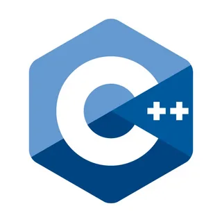
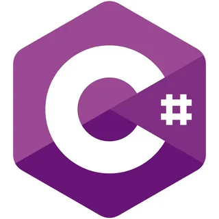

|  |  |  |
 |

C
Си - это язык программирования, который был разработан в 1972 году в Bell Labs. Он был создан для написания операционной системы UNIX и с тех пор стал одним из самых популярных языков программирования в мире.
Узнать большеC++
C++ - это язык программирования, который является расширением языка Си. Он был разработан в 1983 году Бьярном Страуструпом в Bell Labs и с тех пор стал одним из самых популярных языков программирования в мире.